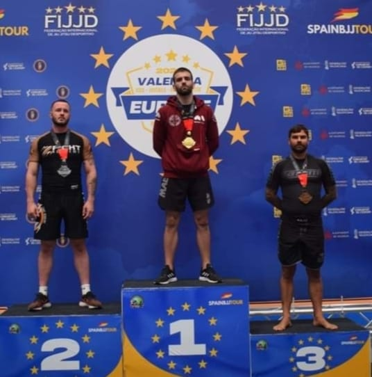
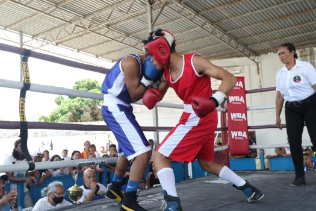
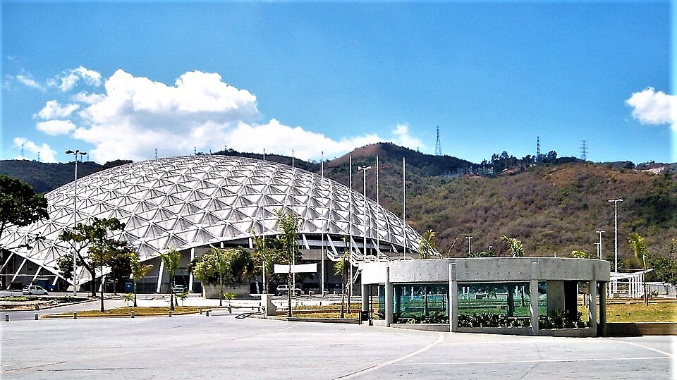
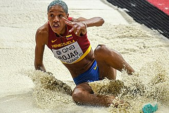
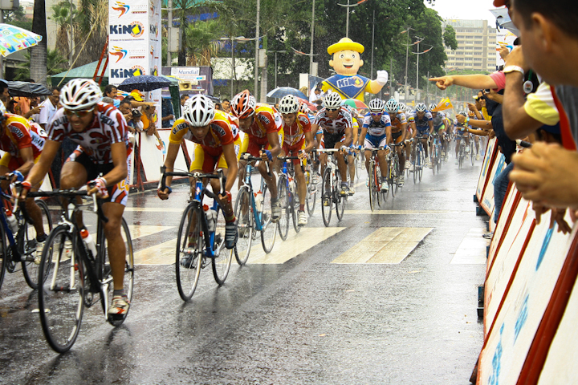
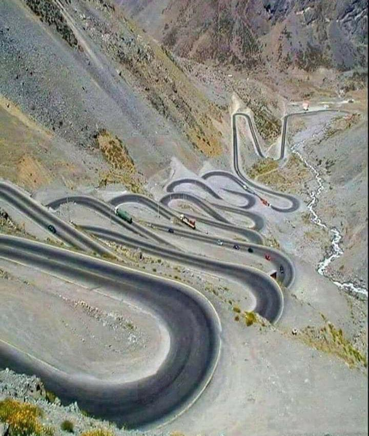
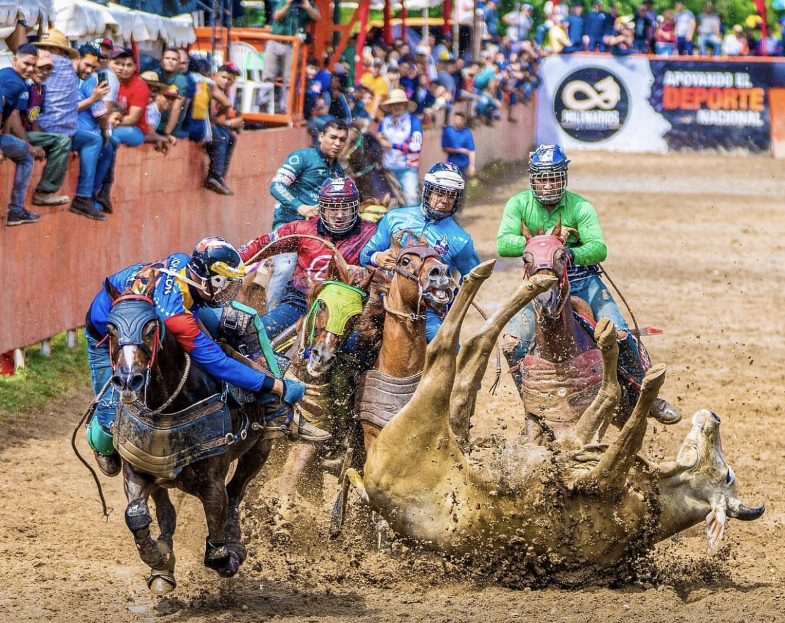
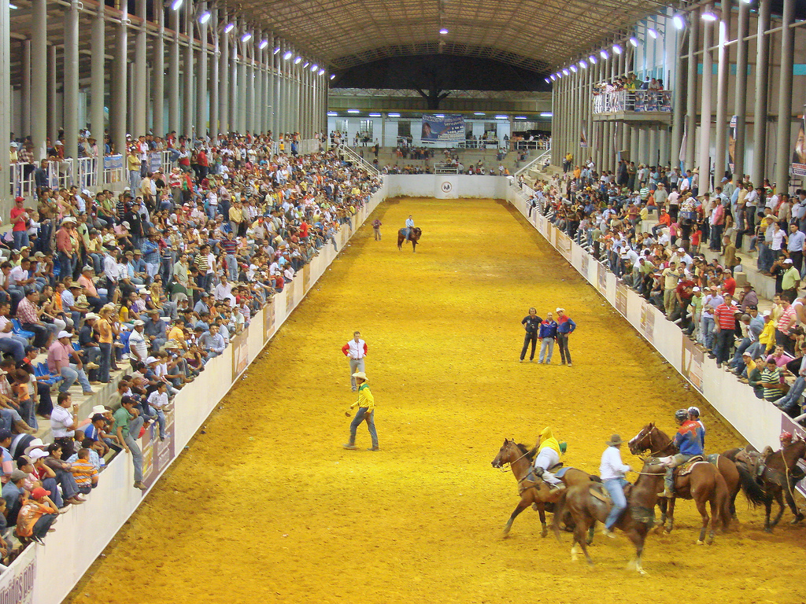

VENEZUELA'S COMPETITIVE SPORTS
Venezuela has a fierce and proud competitive sporting tradition, producing world champions, Olympic medalists, and internationally celebrated athletes across a wide range of disciplines. The competitive spirit runs deep in Venezuelan culture — from the boxing gyms of Caracas to the cycling roads of the Andes — and the country's athletes have consistently punched far above their weight on the global stage.

Every medal won, every championship claimed, every record broken by a Venezuelan athlete is a moment of national celebration that reverberates through every city and town in the country. Venezuela's competitive sports culture is defined by sacrifice, resilience, and an unwavering hunger for greatness that has carried its champions to the highest podiums in the world.
BOXING

Boxing is Venezuela's most internationally celebrated competitive sport, with a lineage of world champions stretching back to Francisco Rodríguez, who won Venezuela's first Olympic gold medal at the 1968 Mexico City Games. Legends like Betulio González, Edwin Valero, Jorge Linares, and Antonio Esparragoza have brought world title belts back to Venezuela across multiple weight divisions. Venezuelan boxers are renowned for their aggressive style, raw power, and exceptional heart — products of a grassroots boxing culture that continues to produce elite fighters generation after generation.

The Poliedro de Caracas has hosted some of the most legendary boxing nights in Venezuelan history, with world title fights drawing thousands of passionate fans into its iconic dome. The city of Maracay is also a key hub of Venezuelan boxing culture, home to the venerable Gimnasio Alcalá where generations of champions have trained. Visiting a live boxing card in Venezuela — especially a world title fight — is an unforgettable experience of raw atmosphere and national pride.
ATHLETICS — YULIMAR ROJAS & TRIPLE JUMP

Venezuela's greatest active athlete is Yulimar Rojas — the women's triple jump world record holder at 15.74 meters and the Tokyo 2020 Olympic gold medalist, widely regarded as the greatest female triple jumper in the history of the sport. Rojas has elevated athletics to a mainstream passion in Venezuela, inspiring a new generation of track and field athletes. Her dominance across World Championships and Olympic Games has made her a towering symbol of Venezuelan excellence on the world stage.

The Estadio Brígido Iriarte in Caracas is Venezuela's premier athletics venue, hosting national championships, international meets, and the country's most celebrated track and field competitions. Attending a national athletics championship here — where the spirit of Yulimar Rojas hangs in the air — is a deeply inspiring experience for any sports lover visiting Caracas.
CYCLING — VUELTA A VENEZUELA

The Vuelta a Venezuela, founded in 1955, is one of the oldest and most prestigious stage races in the Americas and a key event in the UCI America Tour calendar. The race winds through Venezuela's dramatically varied landscapes — from scorching coastal highways to the brutal mountain passes of the Andes — drawing international pelotons and enormous roadside crowds across multiple stages. Venezuelan climbers have earned respect on the international cycling circuit, and the Andean highland regions provide world-class altitude training conditions.

The mountain roads of the Venezuelan Andes — particularly the legendary climbs through Mérida state — are where the Vuelta a Venezuela reaches its most dramatic heights. Lining the roadside in the Andean villages as the peloton sweeps past is one of the great free sporting spectacles in South America. The city of Mérida is the natural base for experiencing Venezuelan Andean cycling culture at its most exhilarating.
COLEO — TOROS COLEADOS

Coleo — known formally as Toros Coleados — is Venezuela's most uniquely national competitive sport and a beloved tradition of the llanero cowboy culture of the vast eastern and southern plains. Riders on horseback chase a bull down a sandy corridor at full gallop, attempting to bring it down by grabbing and twisting its tail — a feat demanding extraordinary horsemanship, strength, and split-second timing. Coleo has a structured national competition circuit with regional and national championships that draw thousands of passionate fans across the llanos states.

The heartland of Coleo is the vast Los Llanos plains — particularly the states of Apure, Barinas, and Guárico — where traditional manga de coleo arenas are found in virtually every town and village. The city of Valle de la Pascua in Guárico is considered the capital of Venezuelan Coleo culture, hosting the most prestigious national championship tournaments. Visiting a Coleo competition in the llanos is one of the most authentically Venezuelan sporting experiences imaginable.
Come to Venezuela and witness the fire of true competitive sport up close. Stand ringside as Venezuelan boxers trade thunderous blows for a world title, watch Coleo riders display breathtaking horsemanship on the open plains, or line the roadside of the Andes as cyclists push their bodies to the absolute limit. In Venezuela, competition is not just sport — it is a declaration of national identity, courage, and the relentless pursuit of greatness.